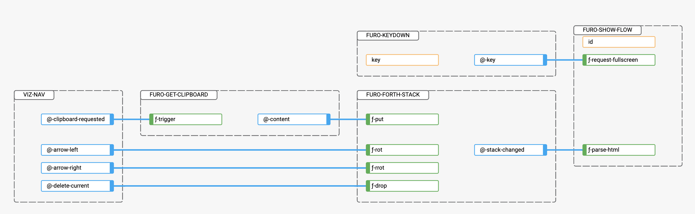

フロー Furo Flow Based Programming #
enables you to write your web applications following the flow based programming paradigm.
StarFully Declarative - No “Code” needed
Instead of writing hundreds of lines of code with HTML element selectors and attaching EventListeners to them to write another HTML element selector for calling a simple method, simply express your intention and string them together.
Visual application analysis
Inspect your application logic visually.

currently in closed beta, will be opened soon
Web components best friend
With this type of programming, you can add or remove different components and chain them together to get different results or functionalities.
And the visual representation makes it easier for a wide range of players to build applications without having to write multiple lines of code.
Coexistence of flows and code - at any time
There is no FBP only, furo-FBP comes with the bridges (hooks and triggers) to solve the problems in the place where it makes the most sense.
Framework agnostic
Furo-FBP works anywhere you use HTML, with any framework or none at all.
Reduced complexity
UIs are far too complex to write and maintain them imperatively. The same methodology is used by some of the most successful game engines to cope with complexity.
The flow based approach is different, but the result is similar to when a programmer tells the machine what he wants to do, and the computer takes those instructions and executes them just as it would with text-based code.
Reduced development time
In 1994 Morrison published a book describing FBP, and providing empirical evidence that FBP led to reduced development times (Advances in Dataflow Programming Languages).